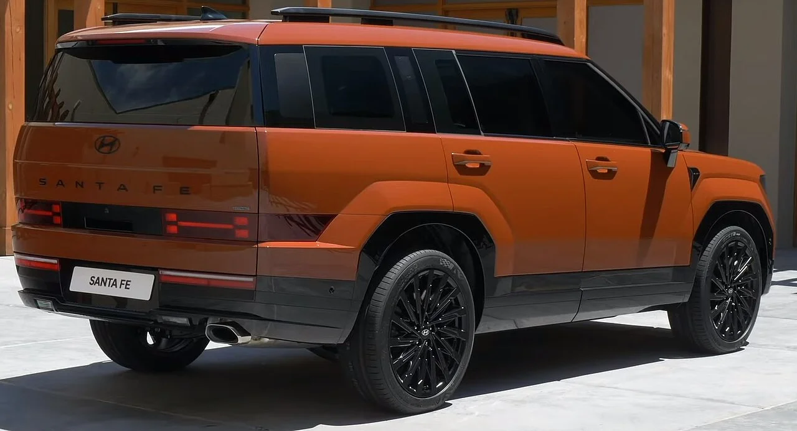

▲ 기아 쏘렌토 하이브리드 — 싼타페와 같은 1.6 터보 하이브리드 파워트레인을 쓰지만, 5인승 2WD 기준 연비는 쏘렌토가 조금 더 좋다
기아 쏘렌토와 현대 싼타페는 같은 플랫폼, 같은 파워트레인을 공유하는 대표적인 '형제차'입니다. 하이브리드 모델도 예외는 아니어서, 두 차 모두 1.6L 터보 하이브리드 엔진과 전기모터를 결합한 동일 계열 시스템을 씁니다. 그런데 막상 가격표와 제원표를 나란히 놓고 보면, 같은 심장을 가지고도 미묘하게 다른 숫자가 눈에 띕니다.
1. 같은 엔진, 같은 마력 — 그런데 연비는 다르다
두 차의 하이브리드 시스템은 사실상 동일합니다. 1.6L 터보 가솔린 엔진이 180마력을 내고, 여기에 47.7kW급 전기모터가 더해져 시스템 최고출력 235마력을 냅니다. 최대토크도 엔진 27.0kgf·m에 모터 토크를 합산한 수치로 거의 같습니다. 그런데 연비에서는 근소한 차이가 발생합니다. 쏘렌토는 5인승 2WD 기준 복합연비 15.7km/L(도심 16.6km/L, 고속도로 14.6km/L)를 인증받은 반면, 싼타페는 2WD 기준 복합연비 14.4km/L에 그칩니다. 같은 파워트레인이라도 차체 공기저항, 무게 배분, 기어비 세팅 등에서 미세한 차이가 반영된 결과로 풀이됩니다.
| 구분 | 쏘렌토 하이브리드 | 싼타페 하이브리드 |
|---|---|---|
| 엔진 | 1.6L 터보(180마력) | 1.6L 터보(180마력) |
| 전기모터 | 47.7kW | 47.7kW |
| 시스템 최고출력 | 235마력 | 235마력 |
| 복합연비(2WD) | 15.7km/L(5인승) | 14.4km/L |
2. 시작가는 싼타페가, 트림 구성은 훨씬 다양하다

▲ 현대 싼타페 하이브리드 — 트림이 6개로 세분화되어 있어 취향에 맞는 사양을 고르기 좋지만, 최상위 트림 가격은 4,807만원까지 올라간다
가격 구조를 보면 쏘렌토 하이브리드 진입 트림(프레스티지)이 친환경차 세제 혜택 적용 시 3,896만원부터 시작하고, 싼타페 하이브리드 진입 트림(익스클루시브)은 3,964만원부터 시작합니다. 시작가만 놓고 보면 쏘렌토가 근소하게 저렴합니다. 하지만 트림 구성에서는 확연한 차이가 있습니다. 쏘렌토는 프레스티지·노블레스·시그니처·시그니처 X-Line 4개 트림으로 비교적 단순하게 운영되는 반면, 싼타페는 익스클루시브·프레스티지·H-Pick·블랙 익스테리어·캘리그래피·블랙잉크까지 6개 트림으로 세분화돼 있습니다. 특히 인기 사양을 묶은 'H-Pick'(4,508만원) 같은 패키지 트림은 싼타페에만 있는 선택지입니다. 최상위 트림 가격은 싼타페 캘리그래피·블랙잉크가 4,807만원(2WD 기준)으로, AWD를 포함하면 5,127만원까지 올라갑니다.
3. 그렇다면 무엇을 기준으로 골라야 하나

▲ 기아 쏘렌토 하이브리드 — 트림이 4개로 단순화돼 있어 빠르게 결정하고 싶은 소비자에게 유리한 구성이다
같은 파워트레인을 공유하는 만큼, 두 차의 선택은 결국 디자인 취향과 세부 사양 구성에서 갈릴 수밖에 없습니다. 연비를 최우선으로 본다면 5인승 2WD 기준 쏘렌토가 근소하게 유리하고, 원하는 사양을 세밀하게 골라 담고 싶다면 트림이 더 세분화된 싼타페 쪽이 선택지가 넓습니다. 반대로 트림 고민 없이 빠르게 결정하고 싶다면 4개 트림으로 정리된 쏘렌토가 오히려 명확한 선택이 될 수 있습니다. 최저가로 시작하고 싶다면 쏘렌토 프레스티지가, 사양을 최대한 끌어올리고 싶다면 싼타페 캘리그래피·블랙잉크가 각각의 극단에 있는 선택지입니다.
| 구분 | 쏘렌토 하이브리드 | 싼타페 하이브리드 |
|---|---|---|
| 진입 트림 가격 | 3,896만원(프레스티지) | 3,964만원(익스클루시브) |
| 최상위 트림 가격(2WD) | - | 4,807만원(캘리그래피·블랙잉크) |
| 트림 개수 | 4개 | 6개 |
| 특징 트림 | 시그니처 X-Line | H-Pick(인기 사양 패키지) |

▲ 현대 싼타페 하이브리드 후면부 — 6개 트림 중 인기 사양을 묶은 'H-Pick' 등 세분화된 선택지가 강점이다
4. 구매 전 체크리스트
결국 쏘렌토와 싼타페 하이브리드는 "어느 쪽이 더 낫다"고 단정하기보다, 연비를 조금이라도 더 챙길지 아니면 트림 선택의 폭을 넓게 가져갈지의 문제에 가깝습니다. 같은 심장을 나눠 가진 두 차이지만, 숫자로 뜯어보면 확실히 다른 결의 선택지라는 점만은 분명합니다.